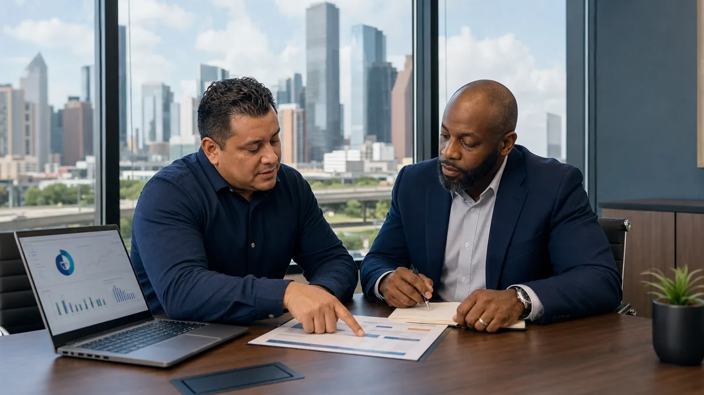

Dental practices rely on tightly connected technology: practice-management software, digital imaging, intraoral cameras, scanners, email, claims systems, phones, payment tools, backups, and cloud services. When one part fails, appointments, documentation, billing, and patient communication can all slow down.
Choosing dental IT support in Houston therefore requires more than comparing hourly rates. A managed service provider should be able to explain how it will keep daily operations available, reduce cybersecurity risk, handle ePHI responsibly, and coordinate with the dental vendors already in your environment.
1. Verify dental workflow experience
Ask which practice-management, imaging, sensor, scanner, and communications platforms the MSP has supported. The provider does not need to replace the software vendor, but it should know how to isolate whether an issue belongs to the workstation, network, server, application, device, or vendor service.
Request a sample escalation path. When imaging stops during a patient visit, who opens the vendor ticket, gathers logs, stays on the call, and confirms the fix? “Call your software company” is not complete vendor coordination.
2. Define HIPAA responsibilities in writing
An IT provider that creates, receives, maintains, or transmits protected health information on behalf of a covered dental practice may be a business associate. HHS cloud guidance emphasizes that a compliant Business Associate Agreement does not replace the practice's own risk analysis, policies, or oversight.
Ask whether the provider will sign an appropriate BAA, how technicians authenticate, how administrative activity is logged, where documentation and backups are stored, and how security incidents are reported. Beware of anyone who markets a product or service as making the practice “automatically HIPAA compliant.”
3. Compare the security baseline
A dental managed services plan should clearly identify its security controls. At minimum, discuss multifactor authentication, endpoint detection, patch management, email protection, least-privilege administration, device encryption, vulnerability management, DNS or web filtering, log monitoring, and security awareness training.
Ask which controls are included, which are optional, who reviews alerts, and what happens after a confirmed threat. A tool that generates alerts without an accountable response process is not the same as managed security.
4. Test the support and response model
- What are response targets for a down office, failed imaging system, locked account, or routine request?
- Are response targets measured during business hours only?
- When is Houston-area on-site support available, and what does it cost?
- Can the provider support early opening times, lunch-hour maintenance, and multi-location schedules?
- How are repeat problems identified and corrected instead of repeatedly closed?
Ask for an example service report. Useful reporting shows ticket trends, recurring causes, patch status, backup results, security events, asset changes, and agreed next actions.
5. Require recovery evidence
“Backups included” does not establish that the practice can recover. Confirm which servers, cloud applications, databases, configurations, and critical workstations are protected. Identify recovery time and recovery point objectives for the systems that keep the practice operating.
Ask how backup failures are monitored, how copies are separated from production credentials, how long data is retained, and when a restore was last tested. The provider should be able to show test results and explain downtime procedures.
6. Evaluate onboarding and exit procedures
A strong MSP begins with discovery: assets, accounts, vendors, diagrams, licenses, warranties, backup status, privileged access, and known risks. The onboarding plan should identify immediate safety issues and separate them from longer-term improvements.
The contract should also explain what happens at termination. The practice should receive its documentation, credentials, configuration information, vendor contacts, and a coordinated transition without losing access to business data.
Questions to ask every dental IT provider
- Which dental systems and devices have you supported?
- Will you sign a BAA when your role requires one?
- Which cybersecurity tools and human monitoring are included?
- Who owns vendor escalation and patient-impacting incidents?
- How do you test backups and document recovery results?
- What is excluded from the recurring fee?
- How quickly can someone reach our Houston-area location?
- What records and access will we receive if the relationship ends?
Authoritative resources
- HHS: Guidance on HIPAA and Cloud Computing
- HHS: Guidance on Risk Analysis
- CISA: Cross-Sector Cybersecurity Performance Goals
This article is educational and does not constitute legal advice or guarantee compliance. Evaluate responsibilities against your practice, contracts, systems, and applicable law.
Related resources
